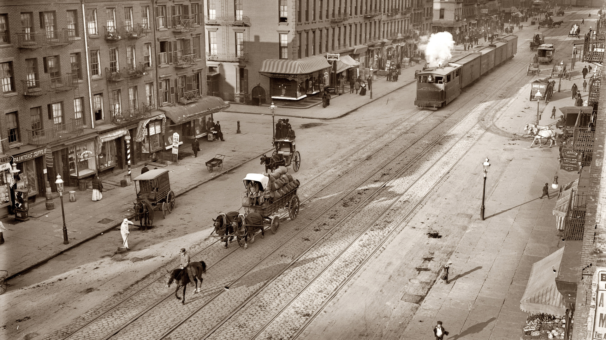

03.11.1979
Конкурс плакатов «Знать, чтобы жить», приуроченный ко Всемирному Дню борьбы со СПИДом

Большое количество речек и богатые залежи кремня, еще со времен каменного века, послужили толчком к освоению этих территорий. Затем, кочевые племена, сменяя друг друга, начиная с Х в. до н.э., использовали эти земли. Киммерийцы, скифы, сарматы,
ощную шахту "Корсуньская копь" (совр. ш-та "Кочегарка"), которая по техническому оснащению и организации горных работ была одной из лучших шахт Донбасса, и где, впервые в России, внедрил потолкоуступный способ отработки крутопадающих угольных пластов.
Источник: https://admin-gorlovka.ru/abot-city/istoriya-goroda
Администрация города Горловка: http://admin-gorlovka.ru/
подробнее